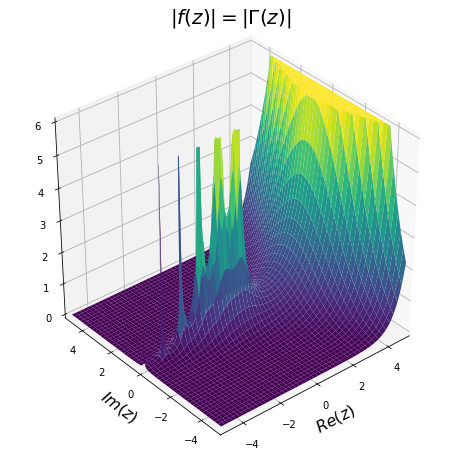
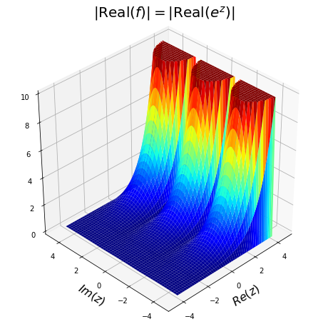
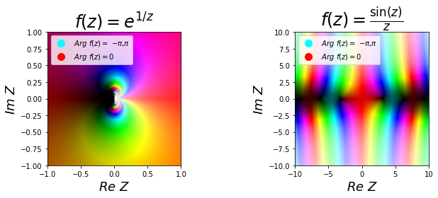

1.2 Functions of a complex variable#
Functions of a complex variable work in an analogous way to functions which operate on real numbers.
Definition 10
A function of a complex variable \(f(z)\) (where \(z=x+iy\)) maps \(z\) onto another complex variable \(w=u+iv\). In general, we write:
Revisiting the examples from previously:
if \(f(z)=z^2\), then
\[f(z) = (x+iy)^2 = (x^2-y^2)+i2xy\]and so
\[ u=x^2-y^2 \quad\& \quad v=2xy\]if \(f(z)=\overline{z}\) then
\[f(z) = \overline{x+iy}=x-iy\]and so
\[u=x\quad \& \quad v=-y.\]
Another way to think about a function is as a mapping from the Argand plane representing the independent variable \(z\) onto the Argand plane representing the dependent variable \(w\) (see figure below).
For example, under the mapping \(w=f(z)\) where \(f(z)=z^2\), we obtain:
All the standard theorems of continuity of functions apply in the complex plane. For example, if two functions \(f_1\) and \(f_2\) are continuous in a complex set \(X\) then,
are continuous in \(X\).

Fig. 23 A complex function \(f\) as a mapping between \(z=x+iy\) and \(w=u(x,y)+iv(x,y)\)#
Visualising complex functions#
Some thought is required if we wish to represent a complex function visually since we require a four dimensional space! This follows since complex functions map points from the complex plane to the complex plane.
For visualisation purposes we typically plot either
the magnitude \(|f(z)|\) versus \(z\); or
the real or imaginary parts of \(z\) as a function of \(z\).
Below we plot the magnitude, of one of the most ‘famous’ complex-valued functions, the gamma function, which can be written mathematically as
The plot below is produced using python (click tab for code) and shows \(|\Gamma(z)|\) on the domain \([-4,4]^2\).

As noted above we can also plot the real and imaginary parts of a complex-valued function. Below we plot the absolute value of the real part of the function
Note that, as expected, the function increases monotonically along the real axis, whilst it is periodic along the imaginary axis.

Note
Other more imaginative methods such as the domain colouring technique exist, which colours the polar form representation of our function. ( See below for an illustration of this method for the functions
For further details see here
